🔁 Goal and finished image
In Hands-on ②, you'll build a map where a train turns around at a double-track station (two lines, inbound and outbound). It's a 2-platform / 3-track station with a "center track" for turnarounds in the middle. A train arriving from the down direction enters the center track, reverses direction, and departs in the up direction — that's the kind of operation you'll be able to set up.
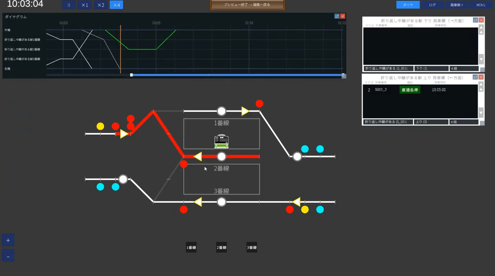
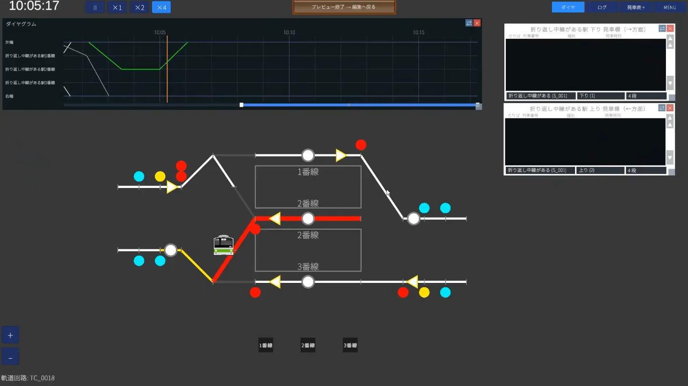
What you'll learn that's new in this tutorial
- Creating a custom train class (specifying name and color code)
- Building a double-track station with a center track (2 platforms / 3 tracks) and a single crossover
- Setting up through trains
- Advanced signal logic: AND conditions and two-aspect signals
- Turnaround operations (linking two path groups, "Create and register next operation")
✏️ Design (2 platforms / 3 tracks, turnaround on the center track)
This station has a center track for turnarounds between the two main lines (double track) of the up and down directions. From top to bottom, the tracks are track 1 (down main line), track 2 (center track), and track 3 (up main line).
🏢 STEP1 Company (create a custom train class)
Create a new map (e.g. map name Turnaround Station, scenario Day) and start from the Company category. The basics are the same as Hands-on ①, so here we'll focus on the new topic of "creating a custom train class".
1-1. Create your own train class (color code)
Beyond just picking from the default bank, you can create a class by specifying its name and colors yourself. This time we'll prepare Through Local for the turning-around train and Local for the through train.
Colors use a 6-digit color code, and you can specify three: background color, text color, and diagram color.
| Color | Recommended | Example |
|---|---|---|
| Text color | White unless you have a preference | FFFFFF |
| Background color | Dark (makes the badge easy to read) | Dark green 006400 |
| Diagram color | Somewhat bright (easy to see on the diagram) | Lime 00FF00 |
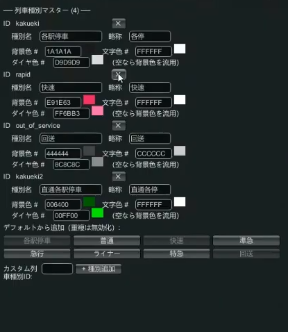
1-2. Prepare two train types
Create two vehicles to run (the procedure is the same as Hands-on ①).
- Type 10: 10-car formation, 200m, light blue
- Type 11: 8-car formation, 160m, yellow-green
→ For details, see the Company editing guide
🛤 STEP2 Wiring (double track + center track, single crossover)
Drawing from the middle of the station is the same as Hands-on ①. This time the key points are that there are more tracks and the single crossover.
2-1. Draw the station's three tracks
Draw the track circuits for track 1, track 2 (center track), and track 3.
2-2. Build the single crossover (combining single switches)
To connect the center track to the up and down main lines, you need a single crossover. A single crossover is made by combining two single switches (picture a straight side and a diverging side, two of each).
To achieve both "entering the center track from the down line" and "exiting onto the up line from the center track," you combine at least three single switches (when making the middle a Y shape), or sometimes four (when making a Z shape).
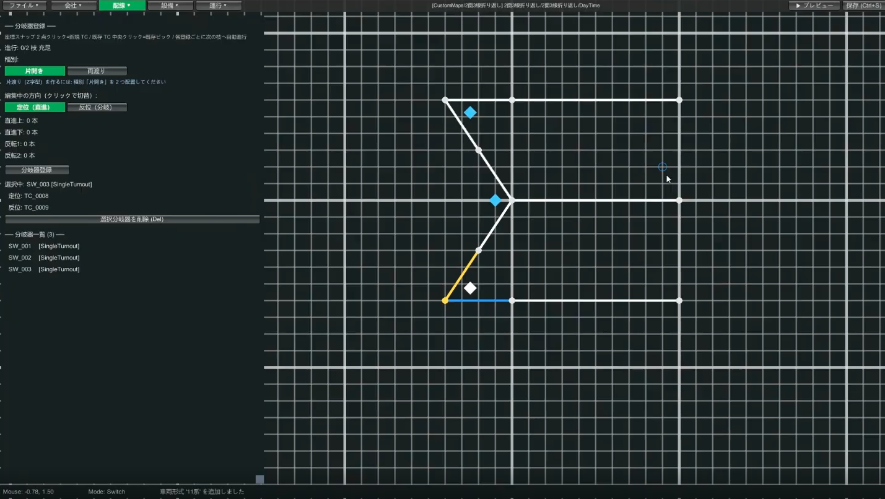
2-3. Track circuits outside the station (three sections each for up and down)
Outside the station (the double-track section), place three track circuits each for the up and down lines. Splitting into sections makes it easier to see a train gradually approaching, and also prevents approach locking from suddenly kicking in.
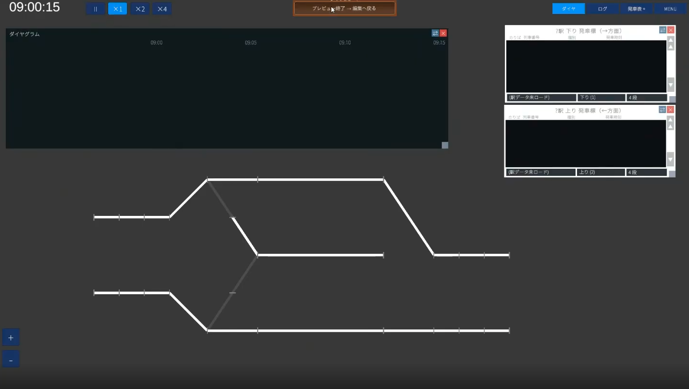
2-4. Set length and speed limit in bulk
| Location | Length | Speed limit |
|---|---|---|
| Station main lines (tracks 1 & 3) | 200m | 80km/h |
| Center track (track 2, dead end) | 200m | 45km/h |
| Switch (shorter side) | 20m | 45km/h |
| Switch (longer side) | 40m | 80km/h |
| Diagonal track circuit just before entering the station | 40m (optional) | 80km/h (optional) |
2-5. Register the station and platforms (all three tracks)
Select the track circuits, register a station name (e.g. Station with a turnaround center track), assign track 1, track 2, and track 3 from top to bottom, and update. Then place the platforms too (the procedure is the same as Hands-on ①).
Turnaround center track). The display side tidies it up automatically.
→ For details, see the Wiring editing guide
🚦 STEP3 Equipment (6 routes, advanced signal logic)
3-1. The six routes and levers you need
There are 3 arrival and 3 departure routes. As in Hands-on ①, manage levers with start levers as numbers (right-heading = 1 digit / left-heading = 2 digits) and end levers as letters.
| Route | Meaning | Start | End |
|---|---|---|---|
1A | Down → arrive on track 1 | 1 | A (track 1) |
1B | Down → arrive on track 2 (center track) | 1 | B (track 2) |
11C | Up → arrive on track 3 | 11 | C (track 3) |
2D | Track 1 → depart to the down line | 2 | D (down main line) |
12E | Track 2 (center track) → depart to the up line (turnaround) | 12 | E (up main line) |
13E | Track 3 → depart to the up line | 13 | E (up main line) |
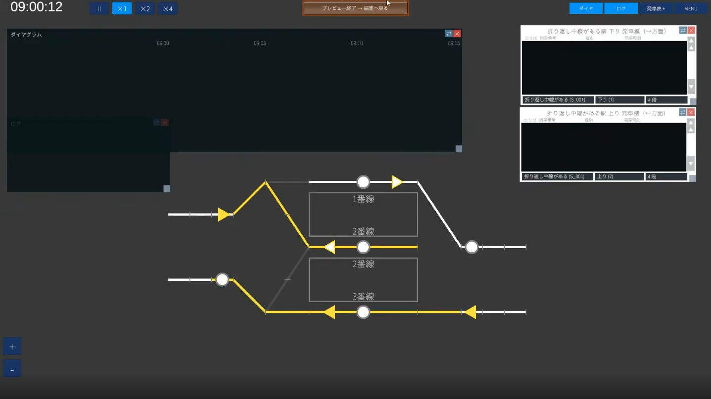
3-2. Place the signals (home, starting, block)
Home and starting signals are paired with routes. Place them all on the left side of the direction of travel for consistency. Since 1A and 1B are routes that use the same start lever "1," it's clearer to place them stacked vertically on screen (track 1 on the left, track 2 on the right from the driver's view).
For protection between stations, also place block signals. For a block signal, specify the track circuit you want to protect with Shift+left-click and place it just before that circuit.
3-3. (Lv2 key point ①) AND condition — just before two conflicting routes
1A (arrive on track 1) and 1B (arrive on track 2) are conflicting routes that branch from the same down main line. Consider the yellow condition of the signal just before these two.
1A and 1B can't be opened at the same time (one is always red). If you set "1A is red OR 1B is red," then one is always red, so the signal before it stays yellow forever.The correct setting is "
1A is red AND 1B is red" — make the preceding signal yellow only when both are red.
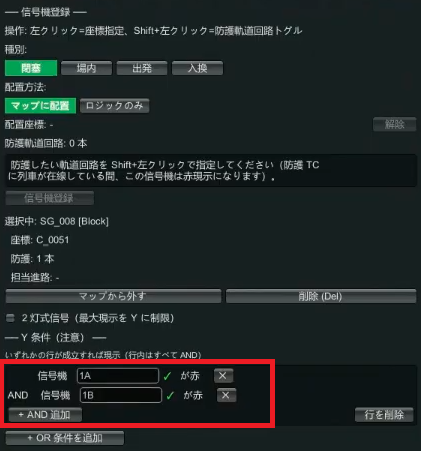
3-4. (Lv2 key point ②) Two-aspect signal — the dead-end center track
The home signal for 1B (arrive on track 2 = center track) has no next signal (because the center track is a dead end). If you do nothing, it turns green the moment the route is opened.
On real railways, when there is no next signal (the way ahead is blocked), a train enters on yellow. To reproduce this, use the two-aspect signal checkbox, which limits the maximum aspect to yellow (it won't go green and stops at yellow = enter with caution).
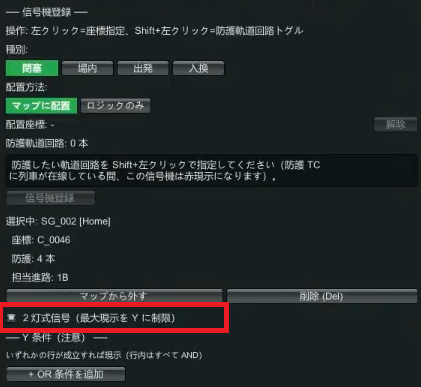
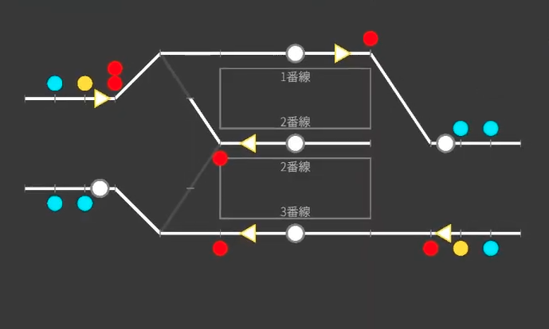
3-5. Departure buttons
Place a departure button on each of tracks 1 through 3 (the procedure is the same as Hands-on ①).
→ For details, see the Equipment editing guide
📋 STEP4 Operations (through and turnaround)
There are more patterns in operations. We'll proceed in order: ① a recap of arrival/departure → ② through trains → ③ turnaround.
4-1. Recap: a path group that arrives and departs on track 1
Operations → Path group. Set the appearance TC (the track circuit where the train appears) and the appearance offset (how many seconds before the station stop it appears), and register the steps in the order route 1A → station stop (Shift+left-click) → route 2D (same as Hands-on ①). The departure board can be set to "auto" for a single line. Create the track-3 arrival/departure the same way.
4-2. Create a through train
For a train you want to pass through rather than stop, just change the stop step to "Pass".
- Create a new path group (e.g.
Track 1 through, direction "right") - The steps are the same as arrival/departure (
1A→ station →2D) - Press the "Stop" button on the middle station step and change it to "Pass"
- Register the through train in the train list (e.g. out-of-service train
9001, with an appearance offset shorter than a stop, such as 60 seconds). Be sure to press the "Update" button after editing
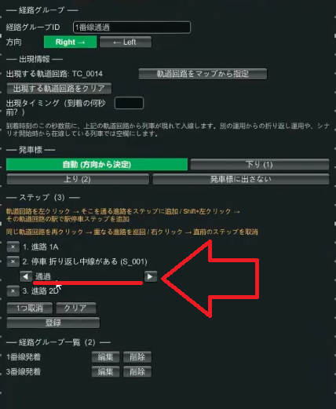
4-3. (Lv2 key point ③) Turnaround operation — linking two path groups
For a train that turns around on the center track (track 2), create two path groups, "for arrival" and "for departure," and link them.
① The arrival path group
- Path group ID (e.g.
Track 2 arrival), direction "right" - The appearance TC is the leftmost track circuit. Since the center track is slow at 45km/h, set the appearance offset longer than the track-1 arrival (e.g. 105 seconds)
- Steps: route
1B→ stop on the track-2 track circuit. At this point, change the stop to "Turnaround (with service)"
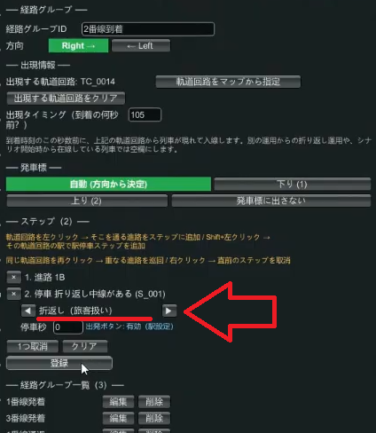
② The departure path group
- Path group ID (e.g.
Track 2 departure), with the opposite direction "left" - The appearance TC is the track-2 track circuit (inheriting the place where the previous operation = arrival ended)
- Leave the appearance offset blank (don't specify it for a turnaround inherited from the previous operation)
- Steps: stop on the track-2 track circuit (this one can stay a normal "Stop (with service)") → depart on route
12E
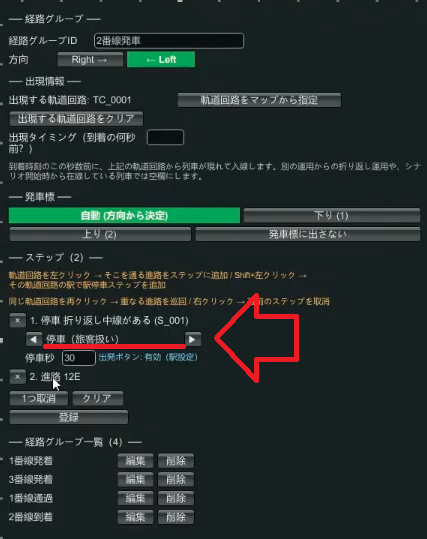
1B and performs a "Turnaround" at the station step → at that moment it switches to the departure group → it stays stopped until the departure button is pressed → it departs on 12E.
The two key points are "make the arrival-side step a turnaround" and "on the departure side, set the appearance TC to the previous operation's location and leave the appearance offset blank."
4-4. Register the train and "Create and register next operation"
- Create a train in the train list (e.g.
5001, Type 11, Through Local, path groupTrack 2 arrival, arrival 10:04) - For a train whose path group ends with a turnaround, a "Create and register next operation" button appears. Press it
- A train with train number
5001_2is created automatically, and the train type is inherited too. Specify the train class and the path group (Track 2 departure), and enter the departure time (e.g. 10:05) - Tidy up the times on the arrival side (5001) too, as in "arrive 10:04 / depart 10:05"
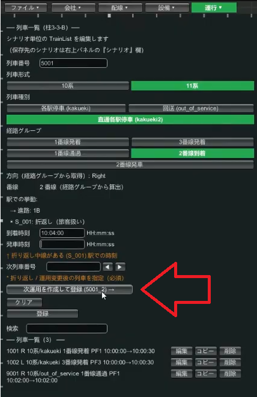
4-5. Diagram and verification
Since the diagram is for a double track, register the rows in this order: two on the left end for up and down, tracks 1–3 of the station, and two on the right end for up and down (Hands-on ① was single track with one row on the left end, but this time it's two each).
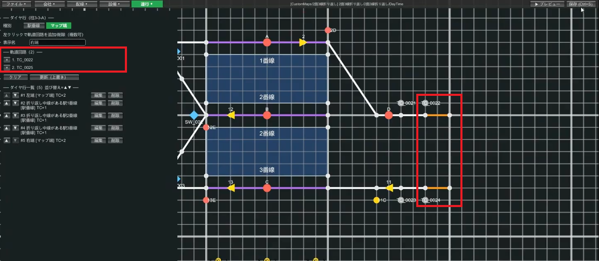
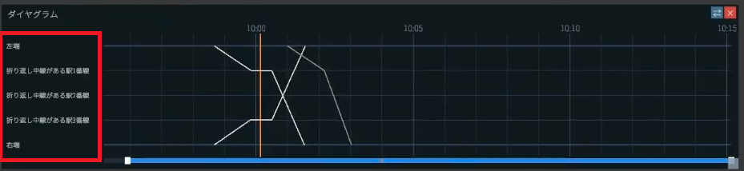
Save and preview. You succeed if a turnaround line is drawn on the diagram, and the departure board shows the class (Through Local) and train number as up (left) direction.
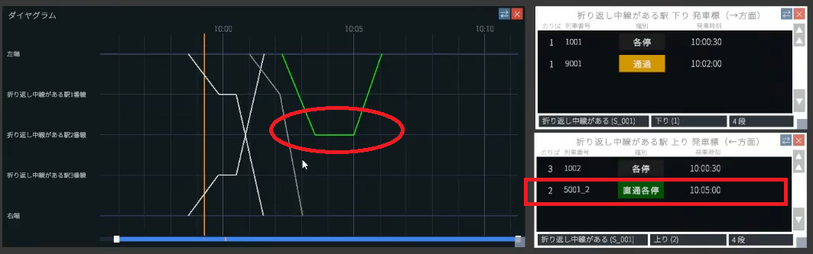
🎉 Done! On to the next level
Nice work. At a double-track station, you can now set up three operation patterns: through, arrival/departure, and turnaround. In particular, the idea of linking two path groups to turn around, plus AND conditions and two-aspect signals, are the high points of Lv2.
If it doesn't work
- The preceding signal stays yellow: is the yellow condition for the two conflicting routes set to OR? (→ change it to AND)
- The signal into the center track stays green: did you make the dead-end-side signal two-aspect?
- It doesn't turn around / the departure side doesn't appear: did you set the arrival-side step to "Turnaround," set the departure side's appearance TC to track 2, and leave the appearance offset blank?
- Error when saving: did you forget to press the "Update" button after editing the path group?
Related guides
- Hands-on ① Single-track passing — a recap of the basics
- Equipment / Operations — details on levers, routes, signals, and path groups
- Glossary — check approach locking, conflicting routes, and more